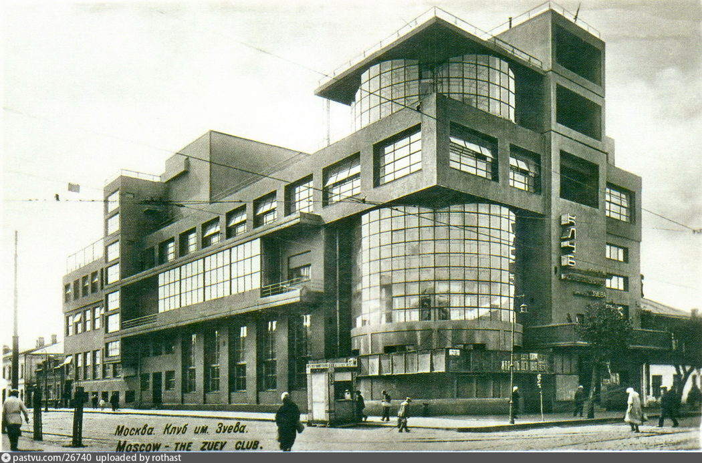

Дом Культуры имени Зуева
Дом культуры имени Зуева (или Клуб профсоюзов коммунальников имени Зуева) — здание дома культуры в Москве, расположенное на Лесной улице; один из наиболее ярких и известных в мире памятников конструктивизма. Построен в 1927—1929 годах по проекту архитектора Ильи Голосова и назван в честь участника революции 1905 года, слесаря трамвайного парка Сергея Зуева. На территории ДК работают театры, среди которых «Квартет И», «Другой театр».
История
Проект Дома культуры был создан архитектором Ильей Голосовым. Открытие состоялось 4 февраля 1930 года. По задумке архитектора внешний вид ДК должен был ассоциироваться с миром техники. Начало строительства было приурочено к 10-летию Октябрьской революции и завершено в августе 1929 года. Своё название ДК получил в честь Сергея Зуева — слесаря трамвайного парка, передовика производства, участника революции 1905 года, казнённого по обвинению в убийстве своего начальника Ф. Кребса.
В советское время в ДК располагалась театральная студия В. В. Книппера, при которой также существовал детский сатирический театр «Ёж».
С 1998 года Дом культуры является основной площадкой театра «Квартет И». В конце 1990-х годов вместимость большого зала дома культуры была почти втрое больше, чем у театра ГИТИСа.
Архитектурные особенности
Архитектура первого десятилетия после Октябрьской революции должна была отвечать вызовам нового времени. Наиболее ярко эти тенденции отразились в зданиях рабочих клубов — прежде русским архитекторам никогда не заказывали общественных зданий, предназначенных для организации как политических, так и культурных мероприятий. Динамичный характер эпохи выражался в принципиально в новых архитектурных решениях.
Родившийся под влиянием кубизма, дом культуры построен на основе асимметрично расположенных правильных геометрических тел. Композиционным центром здания является вертикальный остеклённый цилиндр, на который нанизан весь корпус с большими поверхностями окон. На углу здания, внутри этого цилиндра, расположена лестничная клетка. «Внутреннее движение вертикальной цилиндрической формы как бы преодолело тяжесть горизонтальной формы и вырвалось на простор. Верхняя тонкая плита перекрытия над цилиндром уже не воспринимается как остановка движения, она скорее подчёркивает форму цилиндра и его главенствующую роль в композиции».
Учитывая предназначение здания именно как клуба рабочих, Илья Голосов придал ему сходство с промышленной архитектурой. Центральный цилиндр вызывает ассоциацию с корпусом элеватора, горизонтальный «пояс» третьего этажа напоминает заводской переход-галерею. Большие застеклённые поверхности на фоне серой бетонной штукатурки усиливают впечатление промышленного сооружения.
Под строительство клуба был отведён небольшой участок удлинённой прямоугольной формы площадью 1470 м², что существенно усложняло проектирование здания. Под застройку было использовано 9/10 всей территории, поэтому архитектор создал просторную террасу на крыше площадью 265 м². В связи с маленьким размером участка Голосов консольно вынес часть помещений верхних этажей за красную линию первого этажа — вертикальные и горизонтальные выступы в виде балконов, эркеров, террас и галерей. Главный вход расположен с торцевого фасада, в средней части которого над входом на высоту всех этажей выполнен вертикальный выступ с открытыми лоджиями в верхней части.
Клуб имеет два зала: большой, рассчитанный на 950 мест, и малый на 285 мест. Несмотря на то что при строительстве возникали сложности, связанные с пропорциями участка, внутренние помещения здания спроектированы свободно, грамотно связаны между собой и не производят впечатления затеснённости. Основные несущие конструкции и стены здания изготовлены из железобетона и кирпича.
Современники архитектора положительно отзывались о здании и считали, что среди общественных сооружений Дом культуры имени Зуева относится к числу удачных. Историк архитектуры А. В. Иконников отзывался цилиндре, являющемся композиционным центром здания, как о символе всемогущества труда, использующем совершенную технику, как об уникальной, запоминающейся форме.
Современное состояние
По мнению архитектора Алексея Гинзбурга, перестройки и реконструкции негативным образом отразились на состоянии Дома культуры и привели к его бедственному положению. Лоджии были закрыты, остекленная галерея снесена, а часть окон замурована.
По данным на март 2017 года, руководство национального комитета ИКОМОС ранее объявляло о намерении рекомендовать для включения в список ЮНЕСКО ряд объектов, среди которых и Дом культуры имени Зуева.
В здании работают несколько театральных студий. Основная площадка театра «Квартет И» имеет название Дом культуры имени Зуева. В январе 2016 года на сцене Дома культуры Городским театром поэтов и компанией «Театральное дело» была показана открытая репетиция спектакля «Севастополь». Также в доме культуры проходят работает «Другой театр», созданный автором проекта «Квартет И» Сергеем Петрейковым. На сцене этого театра, открывшегося в продолжение и расширение того, что делает «Квартет И», ставятся спектакли по пьесам современных драматургов и по произведениям современных классиков